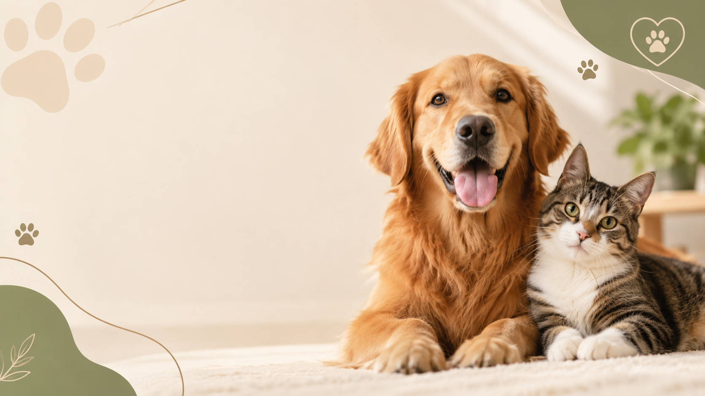

Cuidado especial para seu melhor amigo
Cuidado veterinário com amor, serviços de bem-estar e cuidado - Tudo em um só lugar

Cuidado veterinário com amor, serviços de bem-estar e cuidado - Tudo em um só lugar
Agendamento
Quem somos
Estrutura
Fale conosco
Atendimento 24 horas

Contamos com uma equipe de médicos veterinários experientes, especializados emdiversas áreas para atender seu pet. As consultas generalistas são realizadas por ordem de chegada, 24 horas por dia.

Possuímos um centro cirúrgico completo e com equipamentos modernos. Fazemos cirurgias programadas ou de emergência. Estamos abertos 24 horas para realização de procedimentos cirúrgicos.

A Internação da Toca dos Bichos e funciona 24 horas por dia com a presença de médicos veterinários. Nossa equipe está comprometida em proporcionar um atendimento humanizado para o seu Pet.
35k+
Atendimentos feitos
10k+
Cirurgias realizadas
18k+
Pets Felizes
11k+
Anos de experiências